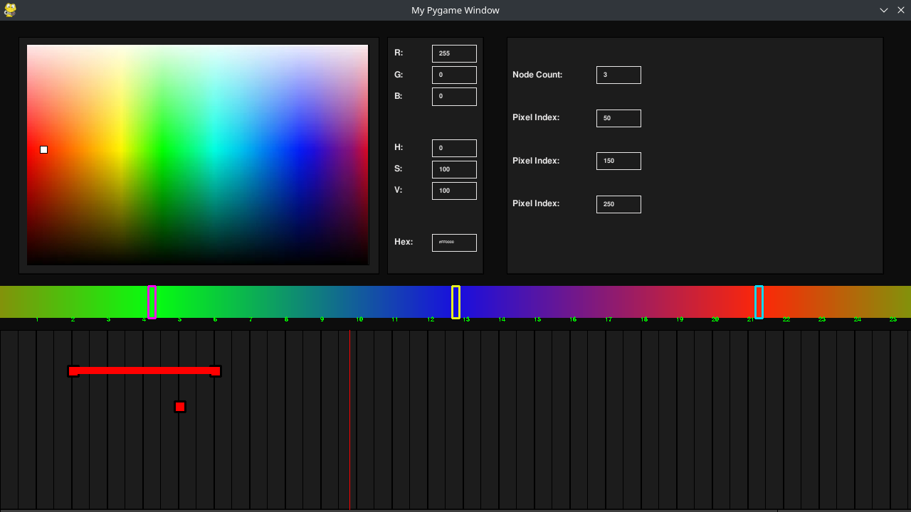

Provides a very simple interface for controling the WS2812B (or alternative) LED strip. Program provides a timeline, event-sequencing nodes, and a preview of the strip to create unique animations. Animations can be saved to an external file to be opened by the program.
Setup
To run the control panel, run main.py on a machine with pygame. This file will display a control panel to animate the LED Strip. reciever.py must be run on a RaspberryPi with the the correct libraries installed. Make sure "OFFLINE_MODE" is set to false and the "HOST_ADDRESS" is set to the IP of the RaspberryPi. This means when running reciever.py" on the RaspberryPi and main.py on the controlling device, all strip pixel data should be sent to "reciever.py" and stored in the strip preview. If running pygame on within the file, you should see a window with the recieved strip data like this (created from reciever.py):
The above preview is a result from the data sent in main.py:
Python software and required libraries for the RaspberryPi can be found here. Note that you also need numpy and pygame to be installed on both the sender and reciever. Information about circuitry and wiring for the neopixel can be found here
Nodes
Similar to animating, the interface consists of a timeline, keyframes, and transitions between. There are also a few different types of keyframes to use. Simply click a node to change its colour properties. When a node is selected, you can click on the colour wheel or change the individual RGB values to edit the node's colour properties.
Hit spacebar to restart the animation. This will move the timeline bar to the start of the animation. The bar will then progress through the animation triggering any nodes it hits. The priority of the nodes in the same column is top node is triggered first, whereas bottom is last. For example, imagine a context where a fill node was placed at the top and a single pixel node at the bottom of the same column. When the timeline bar hits both at the same time, the strip will be filled then a single pixel will be placed.
Single pixel node: (F1)
This allows you to change and interact with only one pixel on the strip.
Fill node: (F2)
This allows you to fill the entire strip with a single colour.

Gradient node: (F3)
When first placing this you choose the number of gradient "nodes" you would like. After inputing a number, re-select the gradient node. This will display the Pixel Index of each sub-node. This is used to change the position of the gradient sub-nodes. You can click the white rectangles on the preview to change the colour of that position. As a result, a gradient will form.
Start node (F4) and Terminate node (F5)
Place a Start node where the animation should start and the Terminate node where the animation should repeat. A terminate node will cause the animation to loop forever, ending each loop when the timeline bar hits the node. The bar will reset at the position of the start node.
Each node can be selected for placement using the pressed "F-Key" and placed using left-click. When selecting a node for placement, the node will snap to a grid on the timeline. Wheen a node is placed, it can be selected for editing using left-click. In the appeared menu, most relevant properties of the node can be edited.
With a selected node, holding shift and left clicking another node on the same row of the same node type will result in a transition being created (This is represented by a bar connecting the two nodes). The transition can be selected using left-click. Here you can edit the properties of the transition for each variable between the nodes. When the timeline bar passes through the transition, an interpolation between the two variables of each node will be represented on the strip. For example, a transition between two fill nodes will result in a smooth colour transition on the strip.